Corrected walking artwork from your new ZIP. Checkerboard areas are transparent. Twenty-six outfits are enabled; four source hats remain clipped and are held below. Existing NPCs assigned to held outfits use their previous coherent artwork.
The corrected ZIP uses 192×240 source frames with feet at (96,225). Whole-frame exports use 128×160 cells and feet at (64,150); the renderer reads this metadata. Complete gloves, shoes and limb gaps are retained. Tiny detached outer header fragments were removed; original source PNGs are archived unchanged.
26 outfits are enabled. Chef, Construction Worker, Artist and Child are held because their four front-facing hats are clipped in the source files. 31 existing civilians use corrected art; the construction worker keeps the previous coherent fallback. Only these 16 front frames need source correction.
The pack uses shared vendor-pilot anatomy with modular wardrobe/headwear, as stated by its author. This is not a claim of 30 individually painted turnarounds.
Source and frame validation · Protected sources
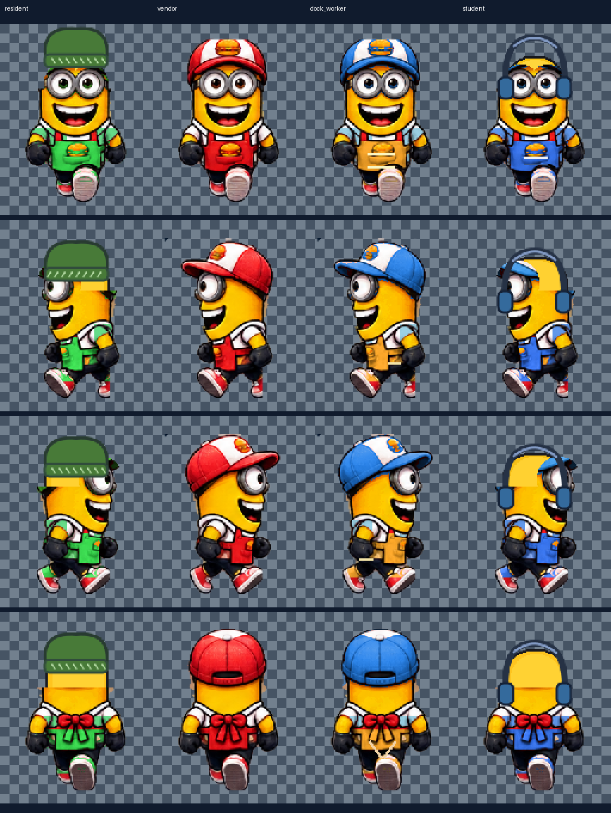
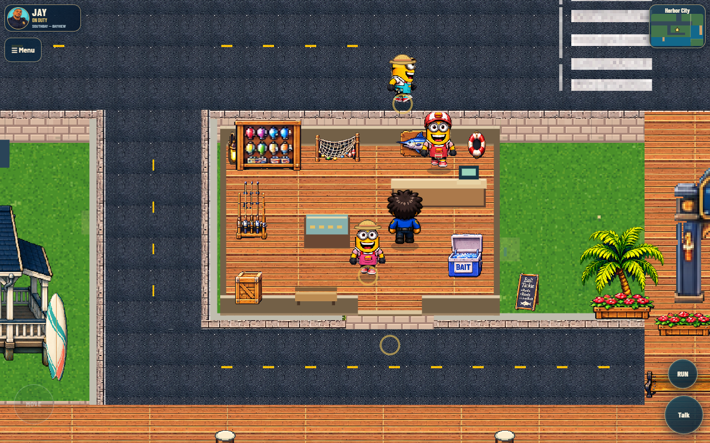
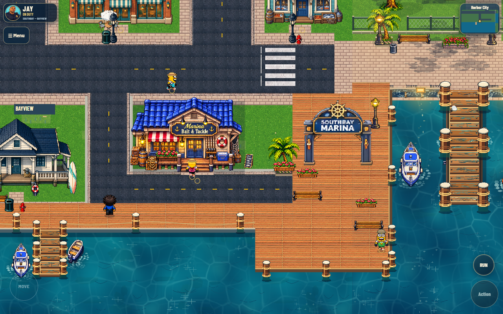
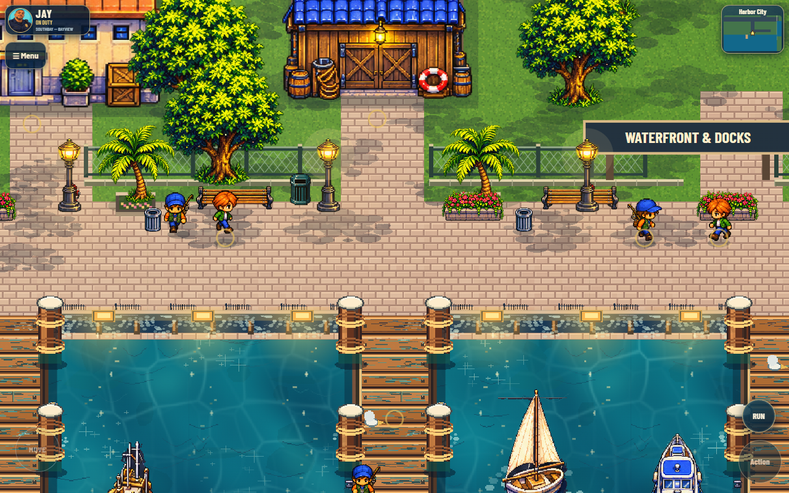
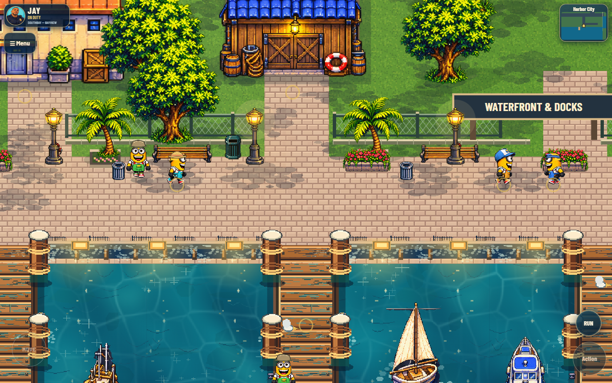
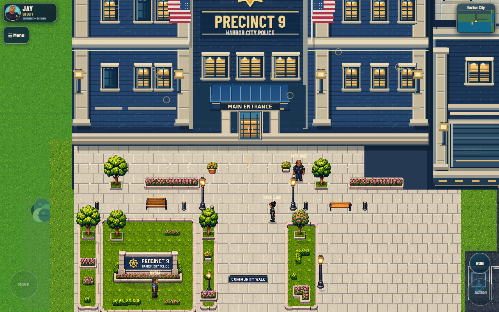
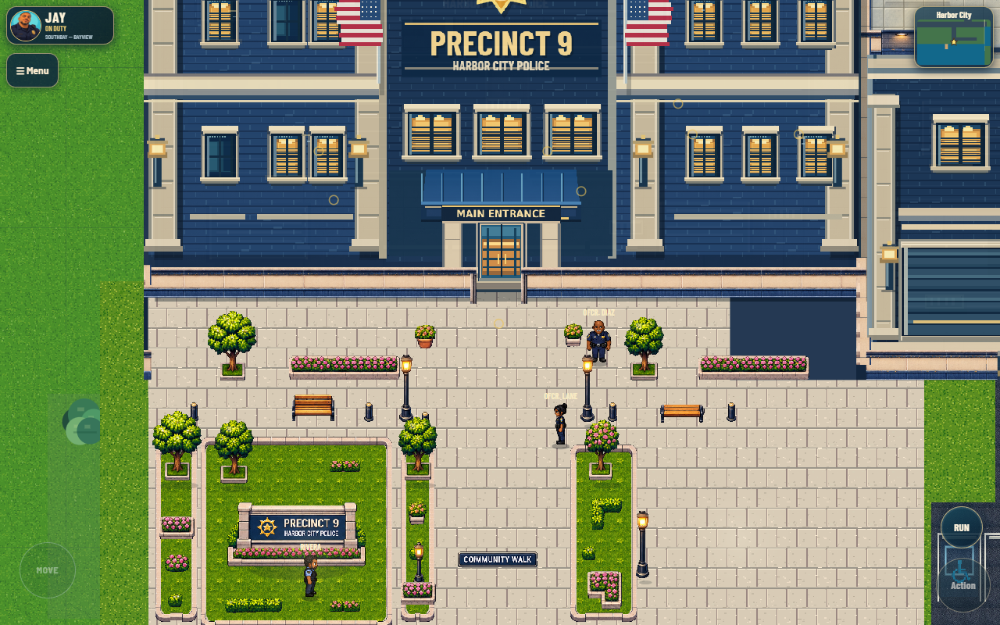
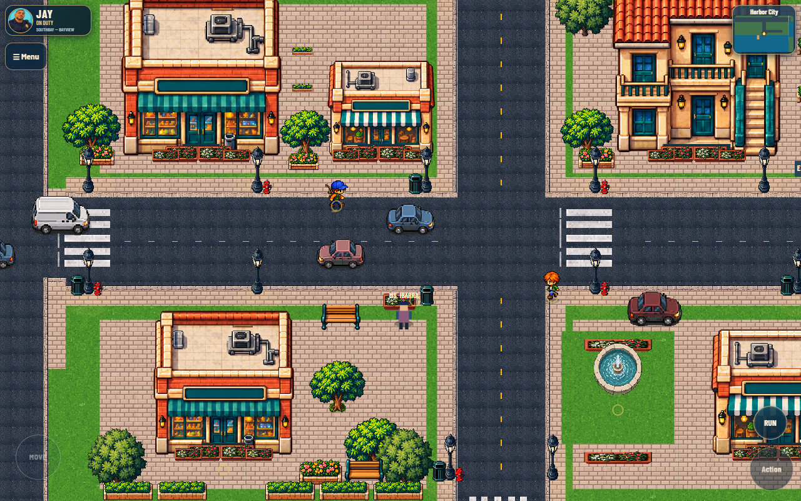
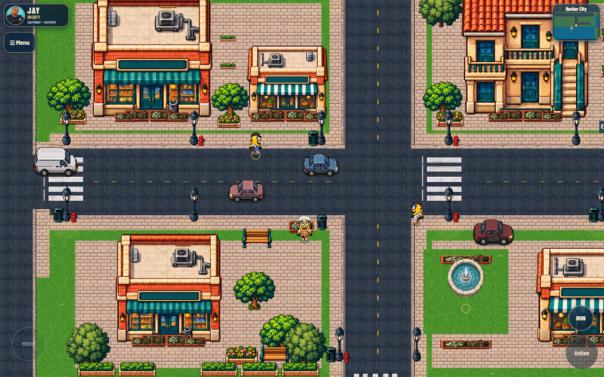
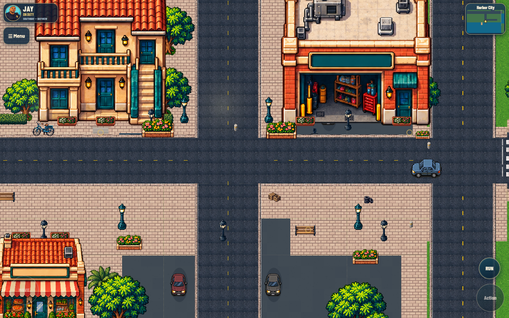
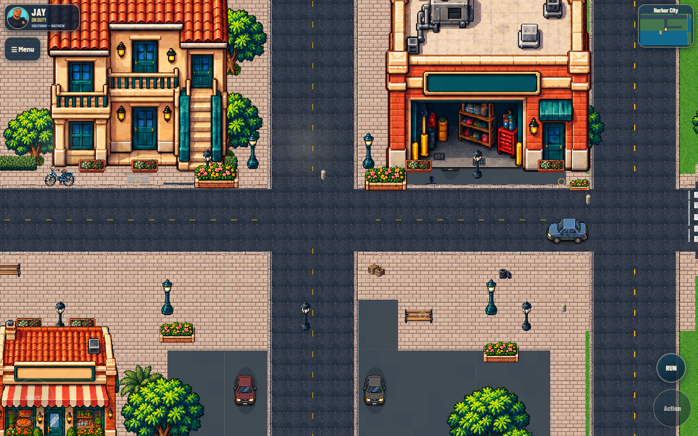
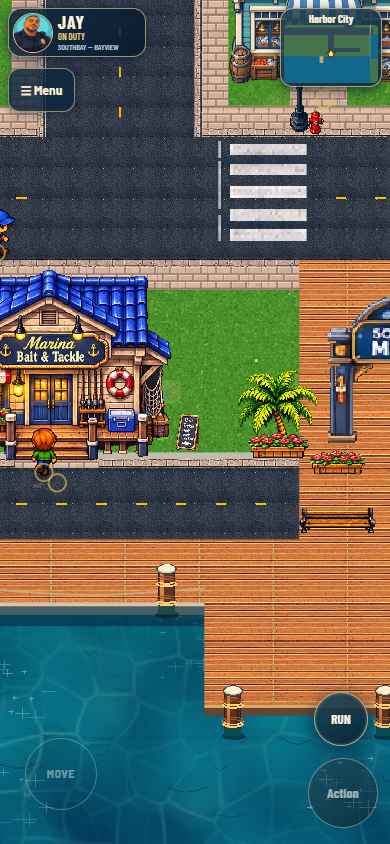
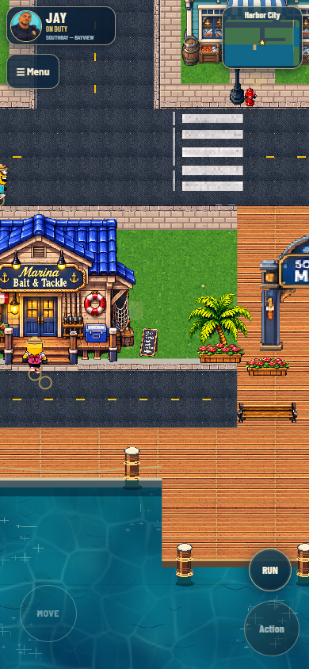
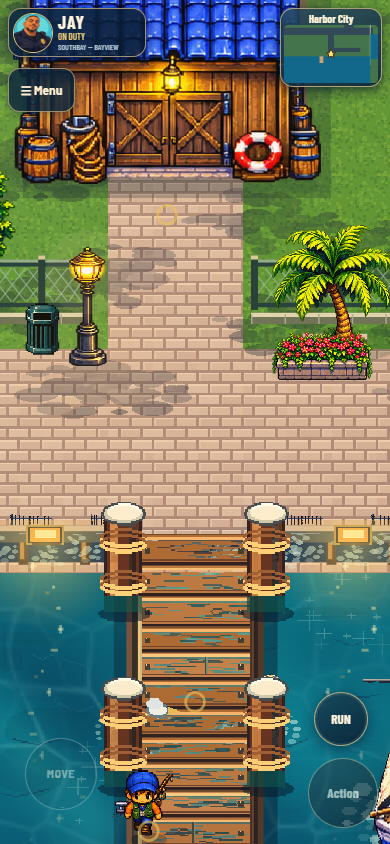
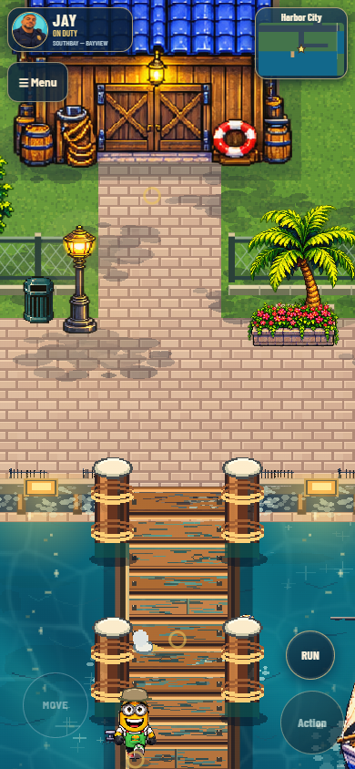
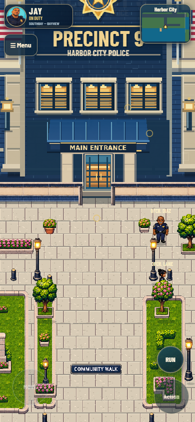
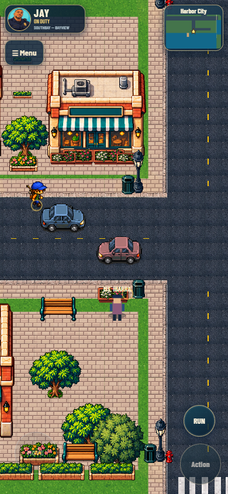
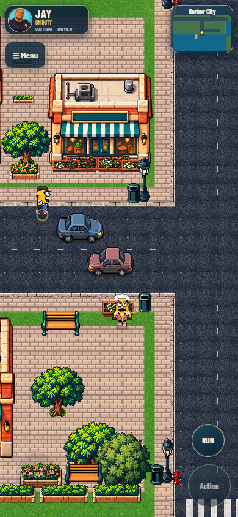
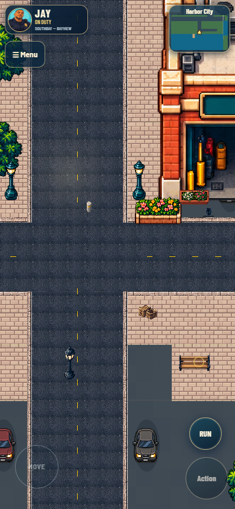